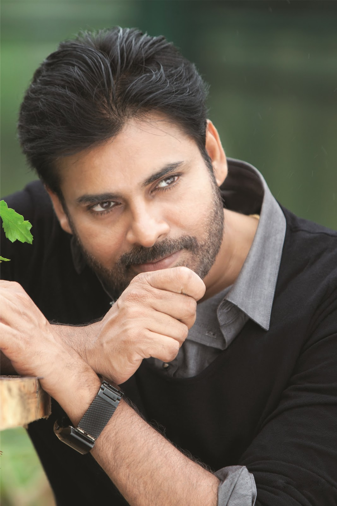
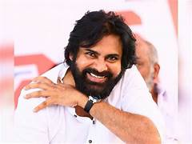
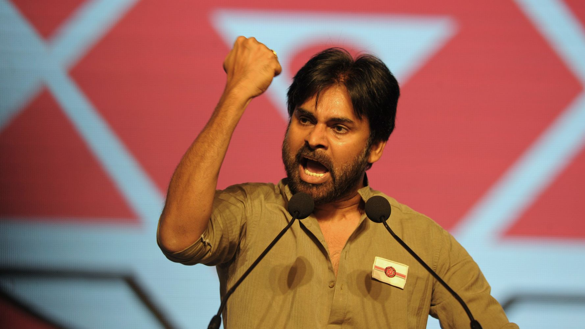
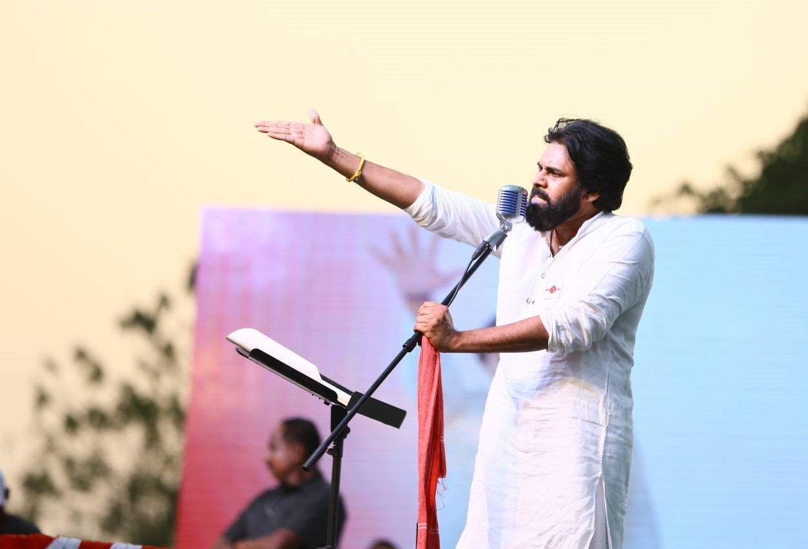

Pawan Kalyan


ABOUT
Konidela Pawan Kalyan (born Konidela Kalyan Babu; 2 September 1968 or 1971[n 1]) is an Indian actor, politician, filmmaker, martial artist, and philanthropist who works in Telugu cinema. Known for his unique acting style and mannerisms, he has a large fan base and a cult following. One of the highest-paid actors of Indian cinema, he has been featured in Forbes India's Celebrity 100 list since 2013 and is the recipient of a Filmfare Award, a SIIMA Award, a CineMAA Award, and a Santosham Film Award.[5] He is also the founder of the Jana Sena Party.
Early life and family
Kalyan was born as Konidela Kalyan Babu on 2 September 1971[n 1] in a Telugu family to Konidela Venkata Rao and Anjana Devi in Bapatla, Andhra Pradesh.[23][24] He is the younger brother of Chiranjeevi and Nagendra Babu. He was awarded "Pawan" during one of his public martial arts presentations.[25] He holds a black belt in karate.[26] He is also the uncle of actors Ram Charan, Varun Tej, Sai Dharam Tej and Allu Arjun.
Acting career
Pawan Kalyan is an Indian actor, screenwriter, stunt coordinator, philanthropist and politician. His film works are predominantly in Telugu cinema. He is the youngest brother of popular actor Chiranjeevi. Pawan Kalyan made his acting debut in the 1996 Telugu film Akkada Ammayi Ikkada Abbayi. His next four films were all box-office successes namely Gokulamlo Seeta (1997), Suswagatham (1998), Tholi Prema (1998), and Thammudu (1999).[1] Kalyan's subsequent films Puri Jagannadh's Badri (2000) and S. J. Suryah's Kushi (2001) were box office successes.[2][3] He made his directorial debut with Johnny (2003), which was a box office failure.[4] He followed this with a string of failures: Gudumba Shankar (2004),[5] Balu (2005),[6] Bangaram (2006),[7] and Annavaram (2006).[8] After a gap, the film Jalsa (2008) directed by Trivikram Srinivas became a box office success.[9] He collaboarated with Suryah again for Puli (2010), which was a box office debacle.[10] Teen Maar (2010) and Panjaa (2011) released to mixed reviews.[11][12] The film Gabbar Singh (2012) released to positive reviews and was a blockbuster at the box office, marking his comeback after three back to back failures.[13] Kalyan's second film with Puri Jaganaadh was Cameraman Gangatho Rambabu (2012), which released to above average reviews.[14] Trivikram Srinivas's Attarintiki Daredi (2013) was an industry hit and got him back to the highest level, yet again.[15] His film Gopala Gopala (2015) with Venkatesh was a moderate success while Sardaar Gabbar Singh,[16] Katamarayudu,[17] and Trivikram Srinivas's Agnyaathavaasi received negative reviews.[18][19] Vakeel Saab (2021), the masala-laced adaptation of the courtroom drama Pink (2016), received positive reviews.[20] His next film, Bheemla Nayak (2022), was a blockbuster and ended up becoming the fourth highest-grossing Telugu film of 2022
Political career
Praja Rajyam Party
Kalyan started his political career in 2008[51] as the president of Yuvarajyam,[52] the youth wing of Praja Rajyam Party which was started by his elder brother Chiranjeevi. He neither contested in elections nor did he hold any constitutional post during his days in Praja Rajyam Party. While he actively campaigned for the party, he was also hit with few health problems. Kalyan was struck with bouts of vomiting, as he was hit by a sunstroke during a roadshow at Vizag on 19 April 2009.[53] Later, in 2011, when Chiranjeevi merged his party[54] with Congress,[55] Kalyan took a break from political life, expressing his silent discontent with his brother's decision to merge the party,[56] and started a new political party in 2014 called Jana Sena Party.
Jana Sena Party


Kalyan founded a political party named Jana Sena Party on 14 March 2014.[57] He wrote a book titled Ism which is also the ideology of the Jana Sena party.[58] He met with then BJP Prime ministerial candidate Narendra Modi to discuss the issues related to both the Telugu states and extended his support.[59] He campaigned extensively for the Telugu Desam Party (TDP) and BJP alliance in Andhra Pradesh and Telangana. He opposed Congress party's rule stating the slogan Congress Hatao, Desh Bachao (lit. 'Stop Congress, Save the Country' in Hindi).[60] His rallies drew what the Deccan-Journal called "huge crowds" in Andhra Pradesh and Telangana.[61] In August 2017, he announced that he intended to enter full-time politics starting October 2017 once he completes his film commitments.[62]
"Pawan Kalyan's talk touched my heart. My soul said that if there are youth like Pawan Kalyan, the Telugu spirit can never die. Telangana and Seemandhra can both prosper under someone like him."
—Prime Minister Narendra Modi about Kalyan[63]
He brought the Uddanam kidney disease crisis to the attention of media and politicians through protests and a hunger strike. Government of Andhra Pradesh responded by constructing dialysis centers and implementing various schemes for the village.[64][65] In November 2016, Kalyan announced that Jana Sena will contest in the 2019 general elections in Andhra Pradesh.[66] He stated that he was planning to contest from all 175 legislatures of Andhra Pradesh without any alliance.[67] He opposed central government's move to privatise Dredging Corporation of India (DCI)[68] on a golden platter.[69] Kalyan led a protest march to condolence farmers who committed suicides or migrated from the drought-prone regions of Rayalaseema.[70] He opposed the TDP Government's decision on land pooling.[71] Kalyan conducted a march on the historical Dowleswaram Barrage in Rajahmundry demanding political accountability.[72] He exposed the alleged unchecked mining in the reserve forest area at Vanthada village of Prathipadu in East Godavari district.[73]
"Want Pawan Kalyan to become Chief Minister of Andhra Pradesh"
—Bahujan Samaj Party (BSP) President Mayawati about Kalyan[74]
Kalyan has announced the Jana Sena party's 2019 election manifesto at Rajahmundry[75] public meeting with many measures to improve the lives of farmers,[76] farm labourers, women, youth, and students. His party would contest together with left parties[77] Communist Party of India, Communist Party of India (Marxist), and Bahujan Samaj Party[78] for the upcoming 2019 elections in both Telugu states of Andhra Pradesh and Telangana. At the same time, when he was actively campaigning for the elections all around Andhra Pradesh, he fell sick and shared a few health problems. As he was getting ready for his next round of campaign at Sattenapalle, he felt dizzy and nauseated. When the chopper was down for refilling at Gannavaram airport, he was down with vomiting, dehydration, and drowsiness. Immediately then, he was hospitalized and treated in Vijayawada. Again the campaign resumed after he got well.[79][80]
The Jana Sena Party has contested 140 constituencies in the 2019 Andhra Pradesh Legislative Assembly elections. Kalyan has contested two constituencies – Gajuwaka[81] and Bhimavaram.[82] He has lost in both to candidates from YSR Congress Party.[83] His party was able to win from Razole, making it the only seat it has won in the election.[84]
Later the same year, on 3 November 2019, Kalyan led a long march in Visakhapatnam in support of construction workers against YSR Congress Party governance who have been facing unemployment due to shortage of supply of sand in Andhra Pradesh.[85]
On 16 January 2020, Kalyan has announced his party's alliance with BJP, after three years of distancing from it. Both the parties would fight together in the upcoming elections in 2024.[86] On 12 February 2020, he led a rally for justice to Sugali Preethi, a 15-year-old girl who was brutally raped and murdered, in Kurnool.[87] He demanded an inquiry by Central Bureau of Investigation (CBI) into the inciden